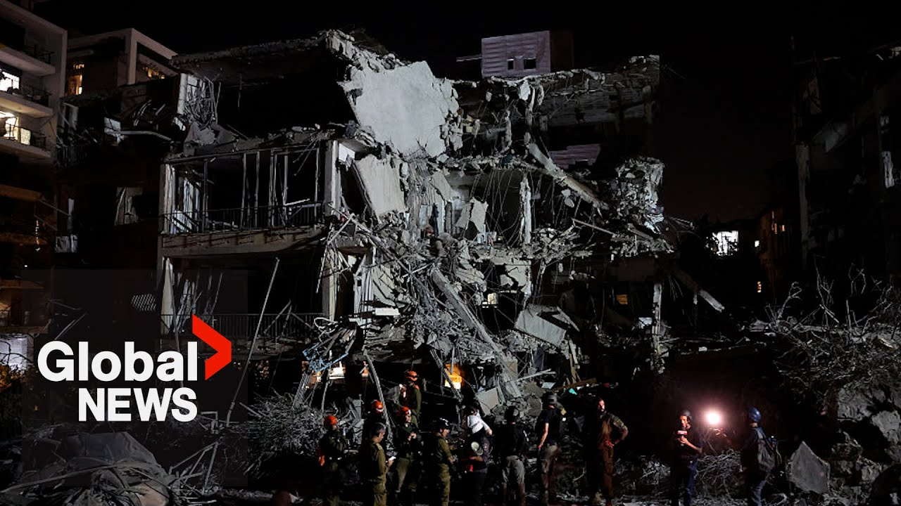

【以色列-伊朗冲突：随着对更广泛战争的担忧升级，接下来会发生什么？】
Summary: The sweeping attacks that started between Israel and Iran early Friday have raised fears of a wider conflict that could draw in other major global powers.
Eric Sorensen explains the conflict and the possible ramifications of the most direct attacks the two regional rivals have ever exchanged.
摘要： 以色列与伊朗于周五清晨爆发的大规模袭击，引发了人们对更大范围冲突的担忧，这场冲突可能会将其他全球主要力量卷入其中。
埃里克·索伦森（Eric Sorensen）解析了这场冲突，以及这两个地区对手之间有史以来最直接交锋可能带来的影响。

⏱️ Estimated Reading Time: 3 min
📚 六级生词 📚 雅思生词 📚 托福生词 📚 专八生词 📚 SAT生词 📚 考研生词 📚 GRE生词 📚 高考生词
Why now? Israel's attack brings international condemnation and a conflict that could engulf the Middle East.
为什么是现在？以色列的袭击引发了国际谴责，并可能导致一场席卷中东的冲突。
US President Trump repeatedly called on Israel to hold off while the US held talks with Iran.
美国总统特朗普多次呼吁以色列在美国与伊朗谈判期间保持克制。
As long as I think there is an agreement, I don't want them going in because I think that would blow it.
只要我认为有协议的可能，我就不希望他们介入，因为我认为这会破坏协议。
Might help it actually, but it also could blow it.
实际上可能有助于协议，但也可能破坏它。
This analyst says that's why Israel moved now.
这位分析人士表示，这就是以色列现在采取行动的原因。
I think this is taking aim at sabotaging diplomacy.
我认为这是在蓄意破坏外交努力。
The next round of talks was scheduled this Sunday between the US and Iran.
下一轮美伊谈判原定于本周日举行。
Israel believed more diplomacy would simply give Iran enough time to acquire several nuclear weapons.
以色列认为更多的外交努力只会给伊朗足够的时间来获取多枚核武器。
In Israel's view, additional justification came from the International Atomic Energy Agency, which declared for the first time in 20 years that Iran was not in compliance to ensure nuclear non-prololiferation.
以色列认为，国际原子能机构提供了额外的理由，该机构20年来首次宣布伊朗未遵守核不扩散义务。
We believe that an action like this um is not compatible with with with the spirit of cooperation.
我们认为这样的行动与合作精神不符。
And there were military incentives for Israel to act.
以色列采取行动也有军事上的动机。
Iran's allies Hezbollah and Hamas have been decimated by Israel.
伊朗的盟友真主党和哈马斯已被以色列重创。
As Canada's former chief of defense staff explained on Global's the West block, Iranian proxies have been um neutered.
正如加拿大前国防参谋长在Global的《The West Block》节目中所解释的，伊朗的代理人已被削弱。
If you take a look at Hezbollah, um it's no longer an effective force.
如果你看看真主党，它已不再是一支有效的力量。
uh Iranian air defense has been reduced and so this was a window of opportunity.
伊朗的防空能力已被削弱，因此这是一个机会窗口。
While Arab neighbors have condemned Israel, some like Saudi Arabia may see positives without saying so.
尽管阿拉伯邻国谴责了以色列，但像沙特阿拉伯这样的国家可能看到了积极的一面，尽管没有明说。
None of the neighboring countries, of course, want Iran to have a bomb.
当然，没有一个邻国希望伊朗拥有核弹。
That's for sure.
这是肯定的。
So, they'll be saying one thing, but they'll be probably quietly saying, "Well, thank goodness they're they're putting that day off.
因此，他们嘴上说一套，但心里可能暗自庆幸：“谢天谢地，他们推迟了那一天。”
They made sure that that's not going to happen anytime soon."
他们确保这不会很快发生。
The attack also diverts attention from Gaza.
这次袭击还转移了人们对加沙的注意力。
Israel has few friends when it comes to its devastating bombing in that territory.
以色列在该地区的毁灭性轰炸使其几乎没有朋友。
And yet there is tacid support in its standoff with Iran.
然而，在与伊朗的对峙中，以色列得到了默许的支持。
Iran bears heavy responsibility for the destabilization of the entire region says France's president Mron.
法国总统马克龙表示，伊朗对整个地区的动荡负有重大责任。
Still Israel has triggered a dangerous confrontation that could last long into the future.
尽管如此，以色列还是引发了一场可能持续很久的危险对抗。
This is thing is going to be an issue for the international community to deal with for decades to come.
这将是国际社会未来几十年需要应对的问题。
Eric Sorenson, Global News, Toronto.
埃里克·索伦森，环球新闻，多伦多。